정보보안기사 (2013-10-26 기출문제)
1과목: 시스템 보안
1. 다음 중 세마포어에 대한 설명으로 올바르지 못한 것은?
- 여러 개의 프로세스가 동시에 그 값을 수정하지 못한다.
- 상호배제 문제를 해결하기 위해 사용된다.
- 세마포어에 대한 연산은 처리 중에 인터럽트 되어야 한다.
- 다익스트라(E.J. Dijkstra)가 제안한 방법이다.
(정답률: 48%)

2. 다음 중 분산처리시스템에 대한 설명으로 올바르지 않은 것은?
- 투명성을 보장한다.
- 연산속도, 신뢰도, 사용가능도가 향상된다.
- 시스템 확장이 용이하다.
- 보안성이 향상된다.
(정답률: 36%)
3. 메인 프로그램 수행 중에 메인 프로그램을 일시적으로 중지시키는 조건이나 이벤트의 발생(예기치 않은 일 발생)을 무엇이라 하는가?
- 세마포어
- 인터럽트
- 뮤텍스
- 교착상태
(정답률: 64%)
4. 다음 중 리눅스 /etc/passwd 파일에 대한 설명으로 올바르지 못한 것은?
- 사용자 홈디렉토리를 확인할 수 있다.
- 사용자 로그인 계정 쉘을 확인할 수 있다.
- 사용자 계정 UID 값이 “0”이면 root이다.
- 총 5개의 필드로 이루어져 있다.
(정답률: 32%)
5. 윈도우 백업 복구 시에 사용하는 파일이 아닌 것은?
- user.dat
- system.ini
- system.dat
- boot.ini
(정답률: 29%)
6. 다음 중 트로이 목마에 대한 설명으로 올바르지 않은 것은?
- 악의적으로 제작되었다.
- 유틸리티 프로그램에 내장되어 있다.
- 백오리피스 같은 프로그램이 대표적인 사례이다.
- 트로이목마는 자기 복제가 가능하다.
(정답률: 65%)
7. 익명의 FTP 서버를 통해 바운스공격시 사용하는 nmap 스캔타입은 무엇인가?
- -b
- -sW
- -sU
- -sA
(정답률: 20%)
8. 다음 에서 설명하는 공격기법은 무엇인가?
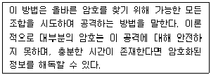
- Brute Force 공격
- 알려진 암호문 공격
- 암호 패턴공격
- 사전공격
(정답률: 57%)
9. 다음 중 바이러스나 웜에 감염되었을 때 숨기기 쉬운 파일은 무엇인가?
- explore.exe
- winupdate.exe
- svchost.exe
- hosts
(정답률: 37%)
10. 다음 중 프로그램이 자동으로 실행되도록 하는 레지스트리가 아닌 것은?
- HKEY_LOCAL_MACHINE\Software\Microsoft\Windows\CurrentVersion\Run
- HKEY_CURRENT_USER\Software\Microsoft\Windows\CurrentVersion\Run
- HKEY_LOCAL_MACHINE\Software\Microsoft\Windows\CurrentVersion\RunOnce
- HKEY_CURRENT_USER\Software\Microsoft\Windows\CurrentVersion\RunServicesOnce
(정답률: 34%)
11. 다음 로그 중에서 ‘lastb’ 명령을 사용하여 확인해야 할 하는 것은 무엇인가?
- wtmp
- utmp
- btmp
- last
(정답률: 58%)
12. 패스워드 관리에 대한 설명으로 올바르지 않은 것은?
- /etc/passwd 퍼미션은 600으로 변경하는 것이 좋다.
- 일반 권한보다 특수 권한인 setuid, setgid를 최대한 활용해주어야 한다.
- 암호화된 패스워드는 /etc/shadow 파일에 저장이 된다.
- 패스워드 없이 로그인할 수 있는 계정이 있는지 살펴본다.
(정답률: 44%)
13. http 트랜잭션에 대한 설명으로 올바르지 않은 것은?
- 200: 서버가 요청을 제대로 처리했다.
- 201: 성공적으로 요청되었으며 서버가 새 리소스를 작성했다.
- 202: 서버가 요청을 접수했지만 아직 처리하지 않았다.
- 203: 요청을 실행하였으나 클라이언트에 보낼 내용이 없음
(정답률: 40%)
14. 다음 중 접근 통제 및 권한 관리에 대한 용어로 옳지 않은 것은?
- AAA는 Authentication, Authorization, Audit의 줄임말로, 이용자 권한관리의 기본적인 요구사항을 말한다.
- 인식(Identification)과 검증(Verification)은 1:N과 1:1의 관계를 가진다는 점에서 차이가 있다.
- 인증(Authentication) 및 인가(Authorization)는 그 식별자가 주장하는 신원을 인정해 주고 권한을 부여하는 것을 말한다.
- 감사(Audit)을 위해선 책임추적성(Accountability) 확보가 중요하며, 전자서명과 부인방지 및 로깅 등을 활용할 수 있다.
(정답률: 48%)
15. 다음 중 버퍼 오버플로우 취약점이 존재하는 함수가 아닌 것은?
- strcpy
- strcat
- scanf
- printf
(정답률: 54%)
16. 다음 의 /etc/shadow 파일의 설명으로 올바르지 않은 것은?
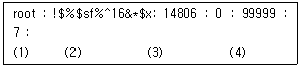
- (1) : 로그인 네임의 사용자 계정은 root이다.
- (2) : ! 표시된 부분은 암호가 없는 것을 말한다.
- (3) : 1970년 1월 1일 이후부터 패스워드가 수정된 날짜의 일수를 계산한다.
- (4) : 패스워드 변경 전 최소 사용기간이다.
(정답률: 43%)
17. 보안 웹 취약점을 연구하는 세계적인 단체는 어느 곳인가?
- ISC2
- OWASP
- APACHE 연합
- RedHat
(정답률: 82%)
18. 메모리 malloc( ) 함수와 free( ) 함수를 통하여 해제하는 영역은 무엇인가?
- CODE
- DATA
- STACK
- HEAP
(정답률: 37%)
19. 다음 중 버퍼 오버플로우를 막기 위해 사용하는 방법이 아닌 것은?
- Non-executable 스택
- ASLR(Address Space Layout Randomization)
- RTL(return to libc)
- 스택 가드(Stack Guard)
(정답률: 45%)
20. 다음 중 MAC 주소를 속여서 공격하는 기법을 무엇이라 하는가?
- 포맷 스트링
- ARP 스푸핑
- 세션하이젝킹
- 버퍼오버플로우
(정답률: 69%)
2과목: 네트워크 보안
21. IPv6에 대한 특•장점이 아닌 것은 무엇인가?
- IPv4의 주소 고갈로 만들어졌다.
- IPv6는 128 비트 주소공간을 제공한다.
- 보안과 확장 헤더가 생겼다.
- offset, ttl 필드가 없어졌다.
(정답률: 23%)
22. 다음 중 사설 IP 대역에 포함되지 않는 것은?
- 10.0.0.0 ~ 10.255.255.255
- 172.16.0.0 ~ 172.31.255.255
- 192.168.0.0 ~ 192.168.255.255
- 223.192.0.0 ~ 223.192.255.255
(정답률: 38%)
23. 다음 설명 중 SSL(Secure Sockets Layer) 프로토콜의 특•장점이 아닌 것은 무엇인가?
- SSL 서버 인증 : 사용자가 서버의 신원을 확인하도록 한다.
- 암호화된 SSL 세션 : 브라우저와 서버 간에 전달되는 모든 정보는 송신 소프트웨어가 암호화하고 수신 소프트웨어가 복호화한다(메시지 무결성, 기밀성 확인).
- SSL 클라이언트 인증 : 서버가 사용자의 신원을 확인하도록 한다.
- SSL 프로토콜의 구조 중에서 세션키 생성은 Alert Protocol 이다.
(정답률: 45%)
24. HIDS(호스트 기반 IDS)와 NIDS(네트워크 기반 IDS)의 설명으로 올바르지 않은 것은?
- HIDS는 네트워크 위치에 따라 설치할 수 있다.
- NIDS는 적절한 배치를 통하여 넓은 네트워크 감시가 가능하다.
- HIDS는 일정부분 호스트 자원(CPU, MEM, DISK)을 점유한다.
- NIDS는 호스트기반 IDS에 탐지 못한 침입을 탐지할 수 있다.
(정답률: 50%)
25. VLAN에 대한 설명으로 올바르지 않은 것은?
- VLAN은 논리적으로 분할된 스위치 네트워크를 말한다.
- 브로드캐스트 도메인을 여러 개의 도메인으로 나눈다.
- MAC 기반 VLAN이 가장 일반적으로 사용된다.
- 불필요한 트래픽 차단과 보안성 강화가 목적이다.
(정답률: 38%)
26. 다음 중 VPN에 대한 설명으로 올바르지 못한 것은?
- 신규노드 확장시 쉽고 빠르게 구축할 수 있다.
- 공중망에 가상의 망을 구성하여 전용선처럼 사용한다.
- 안전한 네트워크 환경을 제공한다.
- 전용선에 비해 빠르고 간편하지만 장비구입 및 관리 비용이 증가된다.
(정답률: 58%)
27. 다음 중 네트워크 디캡슐레이션 과정으로 올바른 것은?
- 패킷 – 세그먼트 – 비트 – 프레임
- 비트 – 패킷 – 세그먼트 - 프레임
- 프레임 – 패킷 – 세그먼트 - 데이터
- 프레임 – 패킷 – 세그먼트 - 비트
(정답률: 48%)
28. 해당 IP주소로 물리적 주소를 알아낼 수 있는 프로토콜은 무엇인가?
- PING
- ICMP
- RARP
- ARP
(정답률: 75%)
29. 다음 중 IPSEC 프로토콜에 대한 설명으로 올바르지 않은 것은?
- VPN의 3계층 프로토콜이다.
- 보안 서비스 제공을 위하여 AH와 ESP 기능을 이용한다.
- AH헤더에서 전송모드와 터널모드로 나누어진다.
- 전송모드는 데이터그룹 전체를 AH로 캡슐화하고 새로운 IP헤더를 추가한다.
(정답률: 42%)
30. IPv6에서 애니캐스트는 무엇을 의미하는가?
- 1:1 통신시 서로 간의 인터페이스를 식별하는 주소이다.
- 임의의 주소로 패킷을 보낼 경우 해당 그룹에만 패킷을 받는다.
- 패킷을 하나의 호스트에서 주변에 있는 여러 호스트에 전달한다.
- 다수의 클라이언트로 한 개의 데이터만을 전송하는 방법이다.
(정답률: 45%)
31. 다음 중 에서 설명하고 있는 웹보안 취약점은 무엇인가?
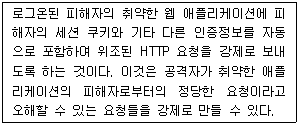
- XSS
- CSRF(Cross-Site Request Forgery)
- Injection
- Data Exposure
(정답률: 72%)
32. 네트워크상에서 오류보고 및 네트워크 진단 메시지를 받을 수 있는 역할을 하는 프로토콜로 공격하는 기법은?
- Smurf 공격
- Arp spoofing 공격
- Ping of Death 공격
- DDoS 공격
(정답률: 50%)
33. 다음 에서 설명하고 있는 공격 기법은 무엇인가?
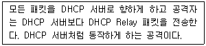
- Smurf 공격
- Arp spoofing 공격
- DHCP spoofing 공격
- Gateway 공격
(정답률: 77%)
34. 지정된 네트워크 호스트 또는 네트워크 장비까지 어떤 경로를 거쳐서 통신이 되는지를 확인하는 도구는 무엇인가?
- PING
- ARP
- ICMP
- TRACEROUTE
(정답률: 74%)
35. 여러 보안 장비들의 로그결과를 모아서 보안관제를 하는 장비를 무엇이라 하는가?
- SAM
- ESM
- IDS
- IPS
(정답률: 45%)
36. 다음 에서 설명하고 있는 네트워크 장비는 무엇인가?
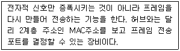
- 허브
- 스위치
- 라우터
- 브릿지
(정답률: 39%)
37. 다음 중 TCP 헤더 Flag의 종류가 아닌 것은 무엇인가?
- RST
- PSH
- SET
- FIN
(정답률: 57%)
38. 다음 세션하이재킹에 대한 설명으로 올바르지 않은 것은?
- 현재 연결 중에 있는 세션을 하이재킹하기 위한 공격기법이다.
- 서버로의 접근권한을 얻기 위한 인증과정 절차를 거치지 않기 위함이 목적이다.
- 세션하이재킹 상세기법 중에 시퀀스넘버를 추측하여 공격할 수 있다.
- 세션하이재킹 공격은 공격자와 공격서버만 있으면 가능하다.
(정답률: 67%)
39. 다음 중 레이어 7계층(L7) 공격에 대한 설명으로 올바르지 못한 것은?
- L7 공격은 네트워크 인프라를 마비시키는 공격이다.
- HTTP Flooding과 SYN Flooding 공격이 대표적이다.
- L7 스위치는 모든 TCP/UDP 포트(0-65535)에 대한 인지가 가능하다.
- URL 주소에서 특정 String을 검사하고, 검색된 문자열을 기준으로 부하를 분산시키는 방식이 URL 스위칭 방식이다.
(정답률: 36%)
40. 다음 에서 설명하고 있는 침입차단시스템 방식은 무엇인가?
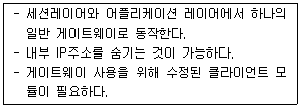
- 서킷게이트웨이 방식
- 패킷 필터링 방식
- 어플리케이션 게이트웨이 방식
- 스테이트폴 인스펙션 방식
(정답률: 24%)
3과목: 어플리케이션 보안
41. 다음 는 FTP 서비스로 인한 xferlog의 기록이다. 설명 중 올바르지 못한 것은?
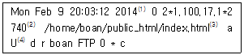
- 파일이 전송된 날짜와 시간을 의미한다.
- 파일 사이즈를 말한다.
- 사용자가 작업한 파일명을 의미한다.
- 압축이 되어 있다는 것을 의미한다.
(정답률: 40%)
42. 다음 에서 설명하고 있는 FTP 공격 유형은 무엇인가?
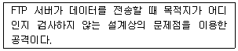
- 익명 FTP 공격
- 바운스 공격
- FTP 스캔공격
- 무작위 스캔공격
(정답률: 45%)
43. OWASP 공격 중 가장 피해가 큰 공격으로 OS나 특정 공격을 위해 값을 넣어 문제를 일으키는 공격 기법은 무엇인가?
- 삽입공격
- 부적절한 평가
- 평문 저장
- 잘못된 권한 설정
(정답률: 65%)
44. 다음 중 PGP에 대한 설명으로 올바르지 못한 것은?
- 1991년에 필 짐머만(Phil Zimmermann)이 독자적으로 개발했다.
- RFC4880에 정의되어 있다.
- 사전에 비밀키를 공유한다.
- 다양하게 사용되는 이메일 어플리케이션에 플러그인으로 사용할 수 있다.
(정답률: 34%)
45. FTP에서 바운스 공격을 사용하는 주된 목적은 무엇인가?
- 포트스캐닝
- 취약점 발견
- 스니핑
- 무작위 대입
(정답률: 25%)
46. /etc/mail/access에 관련된 설명 중 올바르지 못한 것은?
- 고정IP의 릴레이의 허용 유무를 설정할 수 있다.
- REJECT: 메일의 수신과 발신을 거부한다.
- DISCARD: sendmail은 메일을 수신하지만 받은 메일을 통보하고 폐기 처분한다.
- “550 message”: 특정 도메인에 관련된 메일을 거부한다.
(정답률: 41%)
47. 다음 중 ebXML 구성요소에 대한 설명으로 올바르지 않은 것은?
- 비즈니스프로세스: 비즈니스 거래 절차에 대한 표준화된 모델링
- 등록저장소: 거래 당사자들에 의해 제출된 정보를 저장하는 장소
- 핵심 컴포넌트: 전자문서의 항목을 잘 정의해 표준화하고 재사용할 수 없다.
- 거래 당사자 정보를 CPP라 한다.
(정답률: 44%)
48. 다음 중 SSL 프로토콜 핸드쉐이킹에 대한 설명으로 올바르지 않은 것은?
- Hello: 서버가 클라이언트에게 전송하는 초기 메시지이다.
- Client Hello: 클라이언트가 서버에게 연결을 시도하는 메시지이다.
- Server Hello: 서버가 처리한 후 압축방법, cipher suit 등의 정보를 클라이언트에 전송한다.
- Certification Request: 서버는 스스로 자신을 인증할 수 있도록 한다.
(정답률: 32%)
49. 다음 중 네트워크 화폐형 전자화폐가 아닌 것은?
- ecash
- Netcash
- Payme
- Mondex
(정답률: 70%)
50. FTP 서비스 중에서 패시브모드에 대한 설명으로 올바른 것은?
- 데이터포트는 서버가 알려준다.
- 서버가 먼저 Command 포트로 접속을 시도한다.
- PASV 명령어를 사용한다.
- 방화벽 때문에 주로 사용하는 것은 액티브모드이다.
(정답률: 36%)
51. MX 레코드에 대한 설명으로 올바르지 못한 것은?
- MX 레코드란 Mail eXchange record를 의미한다.
- 시리얼은 2차 네임서버와 비교하기 위한 값이다.
- NS 레코드는 DNS로 사용할 도메인을 설정한다.
- MX 레코드에서 SMTP 포트 번호를 수정할 수 있다.
(정답률: 45%)
52. 무선랜 보안강화 방안에 대한 설명 중 올바르지 않은 것은?
- 무선랜의 잘못된 설정이 없는지 정기적으로 살펴본다.
- 사용자와 AP간에 잘못 연결되어 주위에 다른 네트워크로 접속하지 않도록 한다.
- SSID를 브로드캐스팅 불가를 해 놓으면 누구도 접속할 수 없다.
- 분실을 우려한 물리적 보안을 강화한다.
(정답률: 42%)
53. 웹상에서 보안을 강화하기 위하여 해야 할 것으로 가장 바람직한 것은?
- 리눅스 아파치 웹서버 이용시 WebKnight와 같은 전용 방화벽을 사용하는 것이 좋다.
- 인증 등 중요 정보가 오갈 땐 세션만을 신뢰하기 보단 토큰을 추가로 검증하는 것이 도움이 된다.
- 서버엔 웹방화벽보단 침입탐지시스템을 설치하여 SQL 인젝션을 차단 하는 것이 유리하다.
- XSS와 같은 클라이언트를 대상으로 한 공격은 웹페이지에 스크립트를 이용해서 막는 것이 안전하다.
(정답률: 39%)
54. 다음 중 안전한 전자 지불 서비스를 위한 보안 메커니즘 중에서 추적성과 가장 관련이 깊은 서명 메커니즘은?
- 개인서명
- 다중서명
- 그룹서명
- 은닉서명
(정답률: 63%)
55. X.509 표준 인증서 규격을 관리하기 위한 표준 프로토콜은 무엇인가?
- CRL
- PKI
- OCSP
- CA
(정답률: 41%)
56. 서버에서 전자메일을 주고받는데 사용되는 기본적인 프로토콜을 무엇이라 하는가?
- IMAP
- SMTP
- POP3
- MDA
(정답률: 33%)
57. 다음 중 Mod_security에 대한 설명으로 올바르지 않은 것은?
- 경로와 파라미터를 분석하기 전에 정규화하여 우회 공격을 차단한다.
- 웹서버 또는 다른 모듈이 처리한 후에 Mod_security가 요청내용을 분석하여 필터링 한다.
- GET 메소드를 사용해서 전송되는 컨텐츠만 분석 가능하다.
- 엔진이 HTTP 프로토콜을 이해하기 때문에 전문적이고 정밀한 필터링을 수행할 수 있다.
(정답률: 38%)
58. 다음 에서 설명하고 있는 프로토콜은 무엇인가?
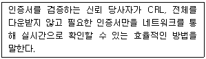
- CRL
- OCSP
- PKI
- X.509
(정답률: 53%)
59. 다음 중 전자입찰 시스템 요구 조건으로 올바르지 못한 것은?
- 독립성
- 공평성
- 인식가능성
- 안전성
(정답률: 70%)
60. 비자와 마스터 카드사에 의해 개발된 신용카드 기반 전자 지불 프로토콜을 무엇이라 하는가?
- SSL
- SET
- TLS
- LDAP
(정답률: 71%)
4과목: 정보 보안 일반
61. 접근통제모델에서 기밀성을 강조한 최초의 수학적 검증을 통하여 만든 모델은 무엇인가?
- 벨-라파둘라 모델
- 비바 모델
- 클락-윌슨 모델
- 차이니즈 모델
(정답률: 66%)
62. 다음 보기에서 설명하는 올바른 암호문 공격방법은 무엇인가?
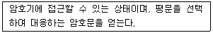
- 선택암호문 공격
- 암호문단독 공격
- 선택평문 공격
- 기지평문 공격
(정답률: 37%)
63. 10명의 사람이 있다. 각 개인간 비밀키를 구성할 경우 몇개의 키가 필요한가?
- 35
- 45
- 55
- 65
(정답률: 53%)
64. 다음에서 수동적 공격에 해당하는 것은 무엇인가?
- 스니핑
- 스푸핑
- 인젝션공격
- 삭제공격
(정답률: 48%)
65. 공개키 암호알고리즘에서 RSA 알고리즘은 무엇에 근거한 암호 알고리즘인가?
- 암호강도
- 이산대수
- 소인수분해
- 키길이
(정답률: 24%)
66. 접근통제 정책에서 역할기반접근통제(RBAC)에 대한 설명으로 올바른 것은?
- 사용자 기반과 ID기반 접근통제이다.
- 모든 개개의 주체와 객체 단위로 접근 권한이 설정되어 있다.
- 기밀성이 매우 중요한 조직에서 사용되는 접근통제이다.
- 주체의 역할에 따라 접근할 수 있는 객체를 지정하는 방식을 말한다.
(정답률: 62%)
67. 해당 고객이 잔여 위험을 피하기 위하여 보험가입 등을 하는 형태의 위험을 무엇이라 하는가?
- 위험방지
- 위험회피
- 위험전가
- 위험감소
(정답률: 30%)
68. 다음 접근통제 중에서 사용자 신분에 맞게 관련된 보안정책은 무엇인가?
- DAC
- MAC
- RBAC
- NAC
(정답률: 26%)
69. 역할기반 접근통제에 대한 설명으로 올바른 것은?
- 중앙집권적 관리에 유리하다.
- 사용자 기반 접근통제로 이루어진다.
- 인사이동이 빈번한 조직에 효율적이다.
- 객체의 소유주에 의하여 권한이 변경된다.
(정답률: 44%)
70. 다음 중 대칭키 암호기반 인증방식의 설명으로 올바르지 않은 것은?
- 소규모 시스템에 적합하다.
- 키분배의 어려움이 있다.
- 전자서명방식을 이용한다.
- 키관리센터의 역할과 비중이 높다.
(정답률: 42%)
71. 강제적 접근통제(MAC)의 특징으로 올바른 것은?
- 중앙에서 정책을 주고 관리한다.
- 사용자 역할에 따라 지정하고 권한을 부여한다.
- 주체에 대응하는 행과 객체에 대응하는 열을 통하여 권한을 부여한다.
- 어떠한 사용자는 다른 사용자에 대한 접근을 허용한다.
(정답률: 39%)
72. 커버로스(Kerberos)에 대한 설명으로 올바르지 못한 것은?
- 비밀키 인증프로토콜이다.
- SSO 기능을 지원한다.
- 암호화 인증을 위해 RSA를 사용한다.
- 사용자와 네트워크 서비스에 대한 인증이 가능하다.
(정답률: 45%)
73. 역할기반 접근통제의 기본 요소가 아닌 것은 무엇인가?
- 사용자
- 역할
- 신분
- 허가
(정답률: 37%)
74. 다음 중 식별 및 인증을 통하여 사용자가 정보자원에 접근하여 무엇을 할 수 있거나 가질 수 있도록 권한을 부여하는 과정을 무엇이라 하는가?
- 인증(Authentication)
- 인가(Authorization)
- 검증(Verification)
- 식별(Identification)
(정답률: 42%)
75. 다음 중 사용자 인증에 적절치 않은 것은?
- 비밀키(Private key)
- 패스워드(Password)
- 토큰(Token)
- 지문(Fingerprint)
(정답률: 35%)
76. 다음 중 공인인증서 구성요소 내용으로 올바르지 않은 것은?
- 공인인증서 일련번호
- 소유자 개인키
- 발행기관 식별명칭
- 유효기간
(정답률: 53%)
77. 다음 에서 스트림 암호형식을 사용한 것을 모두 고르시오.(오류 신고가 접수된 문제입니다. 반드시 정답과 해설을 확인하시기 바랍니다.)
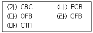
- (가), (나), (다)
- (가), (다), (라), (마)
- (나), (다), (라)
- (다), (라), (마)
(정답률: 7%)
78. 다음 중 SSO(Single Sign On)에 대한 설명으로 올바르지 않은 것은?
- 자원별로 권한을 부여하여 접근을 통제한다.
- O/S 환경과 연동이 가능하다.
- 한 번의 로그인으로 여러 개의 시스템에 대한 사용자 인증을 할 수 있다.
- PKI 기반의 인증서를 사용한다.
(정답률: 39%)
79. 다음 는 OTP(One Time Password) 사용절차에 대한 내용이다. 순서가 올바른 것은?
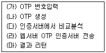
- (나), (다), (가), (라), (마)
- (가), (다), (라), (마), (나)
- (가), (나), (라), (다), (마)
- (나), (가), (라), (다), (마)
(정답률: 50%)
80. 다음 중 전자서명의 특징으로 올바르지 않은 것은?
- 위조불가(Unforgeable)
- 재사용가능(Reusable)
- 부인불가(Non-Repudiation)
- 서명자인증(User Authentication)
(정답률: 48%)
5과목: 정보보안 관리 및 법규
81. 다음 지식정보보안 컨설팅 업체에 대한 설명으로 올바르지 않은 것은?
- 지식정보보안컨설팅 업체 지정은 미래창조과학부 장관이 한다.
- 두 기업 합병 시에는 사전에 미래창조과학부 장관에게 한다.
- 임원이 결격사유가 있는 경우 지정이 불가능하다.
- 휴, 폐업 30일 이전에 신고 및 지적사항 발생 시 그 업무의 전부 또는 일부를 취소할 수 있다.
(정답률: 11%)
82. 다음은 정보보안의 목표에 대한 설명이다. 올바르지 못한 것은?
- 기밀성: 정당한 사용자에게만 접근을 허용함으로써 정보의 안전을 보장한다.
- 무결성: 전달과 저장 시 비인가된 방식으로부터 정보가 변경되지 않도록 보장한다.
- 가용성: 인증된 사용자들이 모든 서비스를 이용할 수 있는 것을 말한다.
- 인증: 정보주체가 본인이 맞는지를 인정하기 위한 방법을 말한다.
(정답률: 23%)
83. 다음은 기업의 보안정책 수립 진행순서이다. 올바르게 나열한 것은?
- 보안방안 수립 - 위험인식 – 정책수립 – 정보보안조직 및 책임 – 정책수립 – 사용자 교육
- 위험인식 – 정책수립 – 정보보안조직 및 첵임 – 보안방안 수립 – 사용자 교육
- 정책수립 – 정보보안조직 및 책임 – 위험인식 – 보안방안 수립 – 사용자 교육
- 정책수립 – 위험인식 – 보안방안 수립 – 정보보안조직 및 책임 – 사용자 교육
(정답률: 25%)
84. 다음 중 정보보호정책에 포함되지 않아도 되는 것은 무엇인가?
- 자산의 분류
- 비인가자의 접근원칙
- 법 준거성
- 기업보안문화
(정답률: 37%)
85. 다음 에서 설명하고 있는 정보보호 수행담당자는 누구인가?
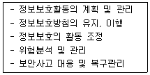
- 정보보호담당자
- 정보보호책임자
- 정보보호관리자
- 개인정보보호담당자
(정답률: 24%)
86. 정보보호관리체계(ISMS) 5단계 수립을 하려고 한다. 올바른 진행 순서는 무엇인가?
- 경영조직 – 정책 수립 및 범위설정 – 위험관리 – 구현 - 사후관리
- 정책 수립 및 범위설정 – 경영조직 – 위험관리 – 구현 - 사후관리
- 정책 수립 및 범위설정 – 경영조직 – 구현 – 위험관리 - 사후관리
- 경영조직 – 위험관리 – 정책 수립 및 범위설정 – 구현 – 사후관리
(정답률: 32%)
87. 다음 중 전자적 침해행위에 포함되지 않는 것은 무엇인가?
- 고출력 전자기파
- 상업용 이메일 발송
- 컴퓨터 바이러스
- 서비스거부
(정답률: 34%)
88. 정보주체의 권리에 따른 설명으로 올바르지 않은 것은?
- 다른 사람의 생명•신체를 해할 우려가 있거나 다른 사람의 재산과 그 밖의 이익을 부당하게 침해할 우려가 있는 경우 열람을 제한할 수 있다.
- 개인정보 열람에 대한 “대통령령으로 정하는 기간”이란 5일을 말한다.
- 개인정보를 삭제할 때에는 복구 또는 재생되지 아니하도록 조치하여야 한다.
- 만 14세 미만 아동의 법정대리인은 개인정보처리자에게 그 아동의 개인정보 열람 등을 요구할 수 있다.
(정답률: 56%)
89. 정보통신기반 보호법에 대한 설명으로 올바르지 못한 것은?
- 정보통신기반보호위원회는 대통령 소속이다.
- 국정원장과 미래창조과학부장관이 주요 정보통신기반시설 보호대책 이행 여부를 확인할 수 있다.
- 주요 정보통신기반보호대책은 지자체장이 안전행정부장관에게 제출한다.
- 정보통신기반보호위원회는 위원장 1인을 포함한 25인 이내 위원으로 한다.
(정답률: 24%)
90. 다음은 지식정보보안 컨설팅 업체 지정인가에 대한 설명이다. 올바른 것은?
- 재지정의 기준, 절차 및 방법 등에 관하여 필요한 사항은 방송통신위원회령으로 정한다.
- 지식정보보안 컨설팅전문업체로 지정받을 수 있는 자는 법인과 개인으로 한정한다.
- 지식정보보안 컨설팅전문업체의 지정을 취소하려면 미래창조과학부장관에게 신고하여야 한다.
- 3년마다 갱신해야 하고 재지정할 수 있다.
(정답률: 19%)
91. 통신과금 서비스에 대하여 ‘정보통신망 이용촉진 및 정보보호 등에 관한 법률’과 ‘전자금융거래법’이 경합이 되었을 때 우선 적용되는 법률은 무엇인가?
- 정보통신망 이용촉진 및 정보보호 등에 관한 법률
- 전자금융거래법
- 통신과금거래법
- 신용정보보호법
(정답률: 45%)
92. 다음 예방회피, 예방교정, 예방탐지에 대한 설명으로 올바르지 않은 것은?
- 예방통제: 오류나 부정이 발생하는 것을 예방할 목적으로 행사하는 통제
- 탐지통제: 예방통제를 우회하는 것을 찾아내기 위한 통제
- 교정통제: 탐지통제를 통해 발견된 문제점을 변경하는 일련의 활동
- 예방탐지: DB를 주기적으로 백업을 한다.
(정답률: 27%)
93. 보안인증 평가에 대한 설명으로 올바르지 않은 것은?
- IPSEC은 새로운 유럽공통평가기준으로 1991년에 발표하였다.
- TCSEC은 일명 ‘오렌지북’이라고도 불린다.
- EAL 등급은 9가지로 분류된다.
- TCSEC은 기밀성을 우선으로 하는 군사 및 정보기관에 적용된다.
(정답률: 35%)
94. 다음 중 ‘정보통신망 이용촉진 및 정보보호 등에 관한 법률’에서 규정하는 이용자에게 알리고 동의 받아야 할 사항이 아닌 것은?
- 개인정보 수집 이용목적
- 개인정보 수집 이용기간
- 수집하는 개인정보항목
- 개인정보 수집을 거부할 수 있는 권리
(정답률: 48%)
95. ‘정보통신망 이용촉진 및 정보보호 등에 관한 법률’에서 수집해서는 안 되는 개인정보 항목은 무엇인가?
- 이름, 연락처
- 학력 등 사회활동 경력
- 상세 집 주소
- 비밀번호
(정답률: 0%)
96. 다음 에서 정의하고 있는 용어는 무엇인가?
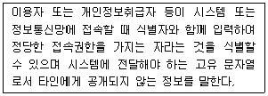
- 망분리
- 접속기록
- 비밀번호
- 계정정보
(정답률: 44%)
97. 다음 에서 설명하고 있는 개인정보 기술적·관리적 보호조치는 무엇인가?
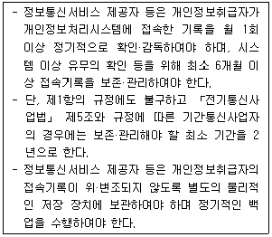
- 내부관리계획 수립시행
- 접근통제
- 개인정보 암호화
- 접속기록의 위·변조방지
(정답률: 32%)
98. 지식정보보안 컨설팅 전문업체 지정을 위한 법적 근거기준은 무엇인가 ?
- 정보통신산업진흥법
- 정보통신망 이용촉진 및 정보보호 등에 관한 법률
- 개인정보보호법
- 정보통신기반보호법
(정답률: 24%)
99. 다음 중 공인인증기관에 포함되지 않는 것은?
- 금융보안연구원
- 금융결제원
- 한국정보인증
- 코스콤
(정답률: 53%)
100. OECD의 개인정보 8원칙에 포함되지 않는 것은?
- 정보정확성의 원칙
- 안전보호의 원칙
- 이용제한의 원칙
- 비밀의 원칙
(정답률: 21%)